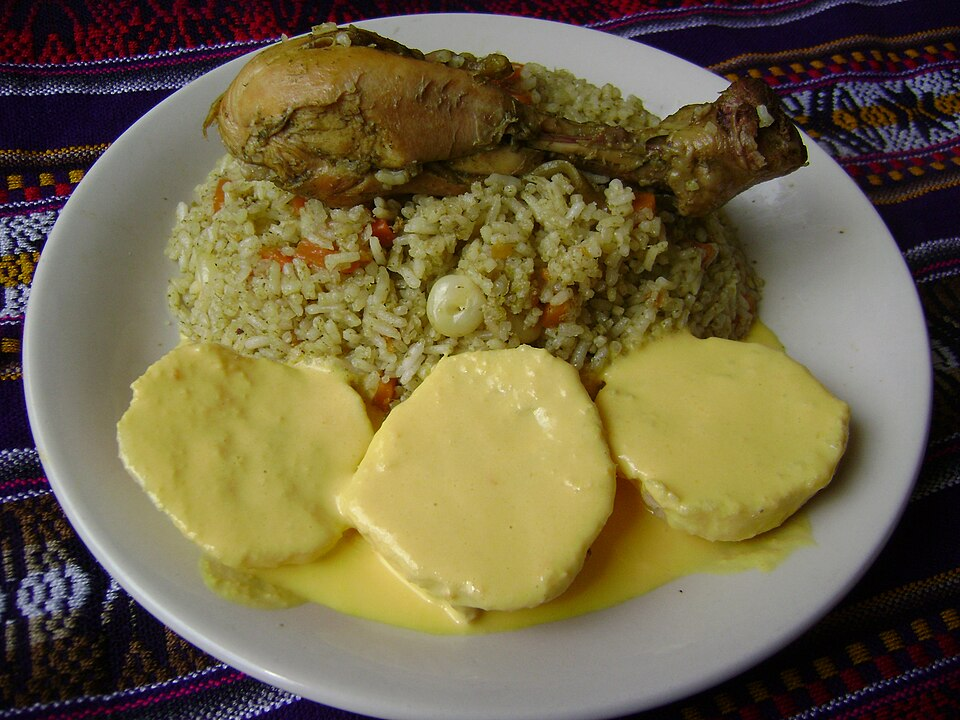

Arroz con pollo

Description
Arroz con pollo is among the most consumed dishes on Peruvian menus. Accompanied by a criolla sauce and/or papa a la huancaina, it has everything we look for: intense flavors, texture from the cream or the sauce and little surprises along the way with peas carrot, corn and often pepper
Ingredients
- 5 pieces of chicken
- 3 cups of washed rice
- 1 diced onion
- 1/2 bell pepper, diced or cut into strips
- 1 carrot, cut into small squares
- 1/2 cup shelled peas
- 1 shelled corn
- 3 cups of chicken broth
- 1/2 cup of dark beer
- 3/4 cup of blended cilantro
- 4 tablespoons of ground yellow chili pepper
- 1 tablespoon of minced garlic
- Salt
- Pepper
- Cumin
- Vegatable oil
Steps
- Season the chicken pieces with salt and pepper.
- Sear the chicken pieces on both sides in a pot with hot oil. Remove and set aside.
- In the same pot (without excess oil), add the onion and sauté until translucent. Then, add the garlic and yellow chili pepper, stirring for 3 to 5 minutes. Next, add the cilantro and cook, stirring constantly, for 5 minutes or until the cilantro changes color slightly. Season with pepper and cumin.
- Return the chicken pieces to the pot and mix them well with the cilantro. Add the dark beer and season with salt to taste. Wait for the alcohol to evaporate slightly, then add the chicken broth. Cook for 20 minutes with the pot covered.
- Once the chicken pieces are cooked, remove them from the pot and add the rinsed rice along with the vegetables. Adjust the seasoning and cook over low heat for 20 minutes, or until the rice is cooked.
- Once the rice is cooked, turn off the heat and return the chicken pieces to the pot. Let it rest for a few minutes before serving.
- Serve and enjoy